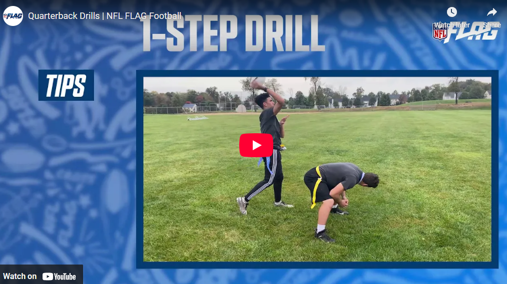

Quarterback Drills
Author: Coach Kyle | Created: June 02, 2025
Quarterback play is about more than just throwing a football. It's about leadership, timing, footwork, and decision-making. These drills focus on the fundamentals that help develop confident, skilled QBs at the youth level.
How to Throw A Football by Tom Brady
This video gives a solid breakdown of basic quarterback drills. Tom Brady walks through footwork, throwing on the run, and pocket movement with easy-to-understand coaching points.
QB Drills w/ Deshaun Watson to Improve Footwork & Throwing!

Russell Wilson's QB Drills to Improve Pocket Presence, Release & Footwork!

First Down Training: 10 Best Youth QB Drills
10 Drills To Be A Great QB (2025)
NFL Flag: How To Throw A Football
Designed for flag football, but still offers valuable fundamentals for any young quarterback.

NFL Flag: Quarterback Drills
Covers footwork, timing, and build overall throwing mechanics.

Youth QB Drills & Mechanics
Extra video resources to help reinforce technique and game awareness.